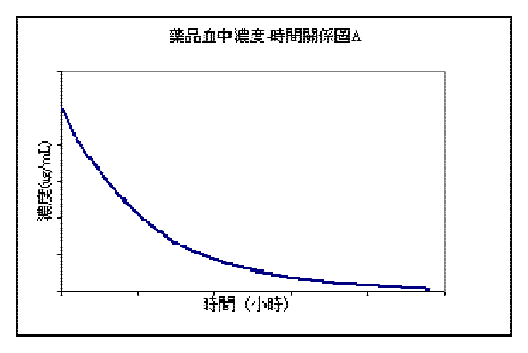
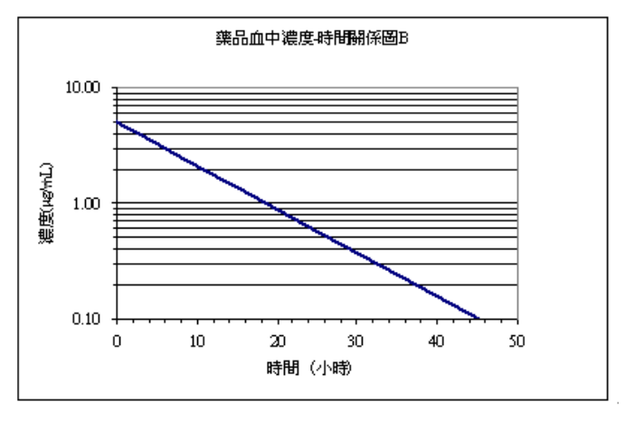
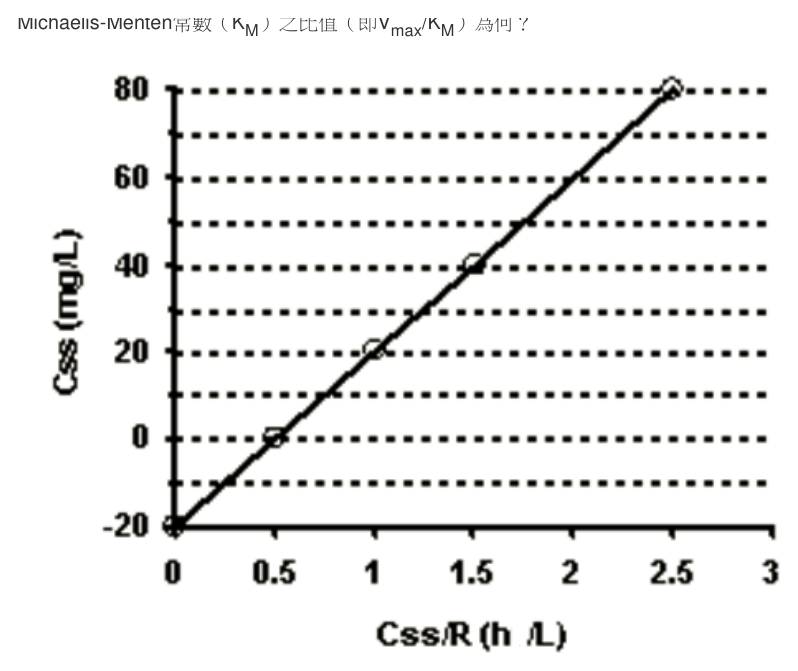
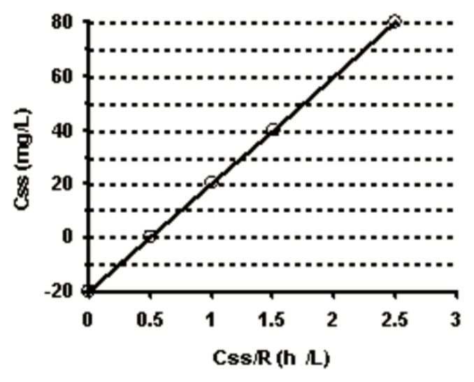

第 1 題待校
在一單質子弱酸溶液（濃度0.2 M，Ka=2×10-5）中之氫離子濃度為何（M）？
- （A）2×10-3
- （B）4×10-3
- （C）1×10-4
- （D）4×10-6
答案：（A）
這一頁是民國 104 年第 1 次藥師藥劑學與生物藥劑學的整份歷屆試題，共 80 題，題目與標準答案出自考選部「國家考試試題及測驗式試題答案」開放資料，其中 66 題附有詳解。以下逐題列出題幹、選項與答案；要計時作答或記錄成績，請用線上練習。
考選部原始場次代碼：104020
線上作答這一科 →第 1 題待校
答案：（A）
答案：（A）
正解：密度與比重的分界在於有無物理單位。密度是單位體積的質量，具有質量／體積單位；比重是樣品密度與基準物密度的比值，沒有單位，因此（A）錯誤，故選 A。
B：密度的定義就是質量除以體積，該敘述正確，故不是本題答案。
C：比重是兩個密度的比值，兩者隨溫度改變的程度會影響結果，測定時必須控制溫度，敘述正確。
D：測定氣體比重時可選空氣或氫氣作比較基準，屬常用的氣體基準選擇，敘述正確。
本題考點：密度（density）——以質量／體積表示，判讀時必有單位；比重（specific gravity）——同溫下與基準物密度相除所得比值，為無因次量；溫度校正（temperature control）——凡比較密度或比重，都須讓樣品與基準物的溫度條件一致。
答案：（D）
正解：單質子弱酸的平衡式為 HA ⇌ H+ + A-，酸解離常數依質量作用定律取生成物濃度相乘後除以反應物濃度。因此 Ka = [H+][A-]/[HA]，故選 D。
A：Ka = [HA]/[A-][H+] 把正確式子的分子與分母完全倒置，得到的是 Ka 的倒數。
B：Ka = [H+][HA]/[A-] 將未解離的 HA 放在分子、解離後的 A- 放在分母，與平衡式的生成物／反應物位置相反。
C：Ka = [HA][A-]/[H+] 仍把 HA 放進分子，且把生成的 H+ 放到分母，不能表示此解離平衡。
本題考點：酸解離常數（acid dissociation constant）——先寫出解離反應，再以生成物活度相乘除以反應物活度；質量作用定律（law of mass action）——各物種在式子的位置由反應式決定，不由酸鹼名稱直覺排列。
答案：（A）
正解：眼用溶液的緩衝系統須兼顧 pH 調節與眼部耐受性。（A）以 1-2% acetic acid 作緩衝劑會造成明顯刺激，並非適當的眼用溶液添加物，故選 A。
B：0.25% methylcellulose 可增加溶液黏稠度，延長藥液在眼表的停留時間，屬合理的稠化用途。
C：0.6-2.0% sodium chloride 可依處方需要調整張力，屬眼用溶液可用的等張調節方式。
D：0.01% benzalkonium chloride 可作多劑量眼用製劑的抗菌劑，敘述正確。
本題考點：眼用溶液耐受性（ophthalmic solution tolerability）——選緩衝系統時，pH 控制與低刺激性必須同時成立；眼用賦形劑（ophthalmic excipients）——稠化劑、等張劑與抗菌劑各有不同功能，不能以同一濃度邏輯互換。
答案：（A）
正解：山梨醇糖漿以高濃度 sorbitol 水溶液形成糖漿特性；藥典收載的山梨醇溶液（Sorbitol Solution）為 70% W/W 的水溶液，並非（A）所述的 60% W/W，題項數值與藥典規格不符，因此（A）錯誤，故選 A。
B：糖漿可加入 10% V/V ethanol 而不致結晶，該敘述符合山梨醇糖漿的處方特性。
C：Sorbitol 不易造成齲齒，且對口腔與喉頭黏膜的刺激性低，這正是其可作糖漿基劑的優點。
D：過量 sorbitol 在腸道產生滲透作用，可能引起緩瀉效果，敘述正確。
本題考點：山梨醇糖漿（sorbitol-based syrup）——辨識時看高濃度多元醇基劑與非致齲特性，濃度以 70% W/W 為記憶錨點；滲透性緩瀉（osmotic laxation）——多元醇大量未被吸收時會保留腸腔水分，故過量使用可能腹瀉。
答案：（A）
正解：本題區分的是將既有化學主藥直接溶解，或先由生藥抽提出有效成分。（A）碘酊可直接將 iodine 溶於適當溶媒製得，不需抽提生藥，故選 A。
B：顛茄酊的有效成分來自 belladonna 生藥，製備時須先經抽提步驟，不能和（A）同列。
C：番瀉葉流浸膏是由 senna 生藥抽提並濃縮所得，抽提正是其製備核心。
D：吐根糖漿的主藥來源為 ipecac 生藥抽提製品，並非單純把既有化學物直接溶於溶媒。
本題考點：酊劑與流浸膏製備（tincture and fluidextract preparation）——先判斷主藥是既有純化學物或生藥來源，只有前者可直接溶解；生藥抽提（crude drug extraction）——有效成分仍在原料植物中時，抽提是取得主藥的必要步驟。
答案：（B）
正解：複方橙皮醑是以多種芳香性揮發油調製的製劑，成分判別要看是否為芳香精油。（B）大豆油為固定油，不屬本方所用的揮發性油，故選 B。
A：蒝荽油為具香氣的揮發性油，屬複方橙皮醑的芳香性組成之一。
C：檸檬油為柑橘類揮發性油，能提供本製劑的芳香氣味，敘述不是排除項。
D：八角茴香油也是芳香性揮發油，與（B）大豆油的固定油性質不同。
本題考點：揮發油（volatile oils）——以可揮發且具特徵香氣為判準，常用於芳香製劑；固定油（fixed oils）——脂肪酸甘油酯類不具揮發油特性，遇到油類名稱時先分辨這兩類。
答案：（A）
正解：依 Stokes' 方程式，沉降速率與粒徑平方成正比、與介質黏稠度成反比；同材質粉體在水與甘油中的密度差雖不同，400 cp 的甘油黏度遠高於 1 cp 的水。（A）2.5 µm 粉體在水中兼具較大粒徑與最低黏度，沉降最快，故選 A。
B：0.25 µm 粉體在水中雖介質黏度低，但粒徑只有（A）的十分之一，沉降速率會因粒徑平方而大幅下降。
C：2.5 µm 粉體與（A）粒徑相同，卻置於 400 cp 甘油中；高黏度使其沉降顯著變慢。
D：0.25 µm 粉體在甘油中同時具有最小粒徑與最高黏度，不可能是最大沉降速率。
本題考點：Stokes 沉降定律（Stokes' law）——比較懸液沉降時先看 d²/η，粒徑放大效果要平方計算；介質黏度（viscosity）——其他條件相同時，黏度越大，顆粒沉降越慢；密度差（density difference）——固體與介質密度差也影響沉降，但須與粒徑及黏度一起比較。
答案：（A）
正解：月桂酸的羧基去質子化後與金屬陽離子形成皂類，界面活性劑的類型由帶電羧酸根決定。（A）月桂酸鈉在水中為帶負電的 anionic surfactant，故選 A。
B：月桂酸鈣仍由 carboxylate 提供陰離子性質，鈣離子不會把它轉成陽離子型界面活性劑。
C：綠肥皂（green soap）是以植物油（主為亞麻仁油）與氫氧化鉀皂化所得的軟皂，屬特定處方的專有名稱；（C）雖提到鉀離子，月桂酸鉀也確為鉀皂，但並非該處方，故不能稱為綠肥皂。
D：月桂酸與 triethanolamine 形成的鹽仍以 carboxylate 為親水帶電端，不是非離子型界面活性劑。
本題考點：皂類界面活性劑（soap surfactants）——脂肪酸鹽的親水端是 carboxylate，因此歸陰離子型；陽離子與非離子界面活性劑（cationic and nonionic surfactants）——分類看在水中的親水頭基電荷，不只看所配對的陽離子名稱。
第 10 題待校
答案：（C）
答案：（D）
正解：金溶媒發生凝聚所需電解質濃度可用 Schulze-Hardy rule 判斷，反離子價數越高，凝聚力越強。負電金溶媒的反離子為陽離子；（D）Al2(SO4)3 提供 Al3+，故以最小濃度即可改變顏色，故選 D。
A：NaCl 的 Na+ 為一價反離子，凝聚力低於（D）的 Al3+，需較高濃度才會產生同一現象。
B：K2SO4 的 K+ 同為一價反離子；硫酸根在此為同離子，不能提升其凝聚力至（D）的程度。
C：CaCl2 的 Ca2+ 雖較一價離子有效，但反離子價數仍低於（D）的 Al3+。
本題考點：舒茲－哈迪法則（Schulze-Hardy rule）——比較電解質致凝聚能力時，以反離子價數排序，價數越高所需濃度越低；膠體凝聚（colloid coagulation）——先判斷膠體表面電荷，再找電解質中電荷相反的反離子。
答案：（D）
正解：利用西黃耆膠調製精油初乳的比例可由阿拉伯膠法推得——揮發油初乳的油：水：膠為 2:2:1，而西黃耆膠的用量約為阿拉伯膠的 1/10，即 2:2:0.1，同乘 10 後得精油、水與西黃耆膠的標準比例 20:20:1；先使膠充分水化後形成穩定的初乳，故選 D。
A：20:1:20 的水量只有 1 份、膠量卻達 20 份，水與膠兩個數值恰與標準的 20:20:1 對調，水量過少且膠量比例失衡，無法對應精油初乳的標準配比。
B：1:20:1 只有膠的 1 份與標準相符，卻把精油量縮小為 1 份（應為 20 份），不符此初乳公式的比例，不能作為本題的正確組成。
C：1:20:20 的精油僅 1 份而西黃耆膠達 20 份，膠量是標準 1 份的 20 倍，遠高於所需比例，與初乳配製原則不符。
本題考點：西黃耆膠乳化（tragacanth emulsification）——精油初乳依精油：水：膠的既定比例配製，先確認三者排列順序再選；初乳（primary emulsion）——膠先水化並包覆油相時，後續稀釋才較能維持乳化穩定性。
答案：（A）
正解：其餘條件固定時，Stokes' 公式中的沉降速率 v 與粒子直徑 d² 成正比。直徑比為 0.25 µm / 5 µm = 0.05，因此速率比為 0.05² = 0.0025 = 1/400。v = 4 × 10^-4 cm/s × 1/400 = 1 × 10^-6 cm/s，故選 A。
B：2 × 10^-5 cm/s 是原速率除以 20 的結果，只按直徑一次方縮小，漏掉 Stokes' 公式的平方關係。
C：8 × 10^-3 cm/s 比原速率更大，與粒徑從 5 µm 降至 0.25 µm 時沉降應變慢的方向相反。
D：1.6 × 10^-1 cm/s 將速率放大到遠高於原值，同樣違反粒徑平方與沉降速率的正比關係。
本題考點：Stokes 沉降定律（Stokes' law）——其他條件不變時 v ∝ d²，粒徑比要先平方再套入速率比；沉降速率換算（sedimentation-rate scaling）——先寫新舊粒徑比並保留單位，可避免把一次方關係誤當平方關係。
答案：（A）
正解：乳劑型軟膏基劑的成品本身必須是油、水兩相乳化的系統。（A）Hydrophilic petrolatum 是無水的吸收性基劑，可吸收水分但本身不是預先形成的乳劑型基劑，故選 A。
B：Hydrophilic ointment 為親水、可水洗的 O/W 乳劑型軟膏基劑，符合乳劑型分類。
C：Vanishing cream 為 O/W 型乳劑，塗佈後水分揮發而呈現清爽感，仍屬乳劑型基劑。
D：Cold cream 為 W/O 型乳劑，雖外觀與使用感不同於（C），仍是油水乳化系統。
本題考點：吸收性基劑（absorption bases）——能吸收水分不等於成品已是乳劑，先看是否含連續水相；乳劑型軟膏（emulsion-type ointments）——O/W 與 W/O 都屬油水兩相乳化系統，分類時不可只看親水性。
答案：（A）
正解：標誌重量 50 g 的軟膏劑重量差異試驗，第一階段的 10 個檢品均不得低於標誌重量的 90%；若進入第二階段，30 個檢品中低於 90% 者不得超過 1 個。因此（a，b）為（90，1），故選 A。
B：（90，3）雖保留正確的重量下限，卻把第二階段容許的不合格檢品數放寬為 3 個，與規定不符。
C：（95，1）將第一階段與第二階段的判定下限改為 95%，不是題目所對應的重量差異標準。
D：（95，3）同時使用錯誤的 95% 下限與過多的 3 個容許數，不能成立。
本題考點：軟膏劑重量差異（ointment weight variation）——先依標誌重量決定允許下限，再區分第一階段與第二階段的抽樣判定；兩階段抽樣（two-stage sampling）——第二階段看的是合計檢品數與允許不合格個數，不是只重新看後取的 20 個。
答案：（A）
正解：皮膚科用非無菌軟膏的微生物限度檢查，須特別排除可能造成皮膚感染的特定病原菌。（A）金黃葡萄球菌與綠膿桿菌均為皮膚科產品需檢查的指定微生物，故選 A。
B：酵母菌歸在真菌／酵母菌總數（TYMC）的限值管制，屬總數檢查的一環，而非指定病原菌；皮膚科產品的指定檢查菌是金黃葡萄球菌與綠膿桿菌，故不能以酵母菌取代對綠膿桿菌的特定檢查。
C：非無菌直腸、尿道用製劑的微生物管制以總需氧菌數（TAMC）與真菌／酵母菌總數（TYMC）的限值為主，並未把綠膿桿菌與黴菌指定為固定的病原菌組合，因此敘述不正確。
D：直腸、尿道用製劑既以 TAMC 與 TYMC 的總數限值為管制重點，酵母菌本身已含在 TYMC 之內，並非與綠膿桿菌並列的指定檢查菌，自然湊不成正確的特定檢查組合。
本題考點：微生物限度檢查（microbial limits test）——依投與部位選擇需排除的特定病原菌，不以總菌數檢查取代；皮膚科產品（dermatological products）——看到非無菌皮膚製劑時，優先確認 Staphylococcus aureus 與 Pseudomonas aeruginosa 的檢查要求。
答案：（B）
正解：正常皮膚角質層的 acid mantle 呈弱酸性，選項中 pH 4.5-6.5 最能涵蓋正常範圍，故選 B。
A：pH 3.5-5.5 的區間整體偏酸，上限僅到 5.5，低於角質層 pH 的常態上緣；正常皮膚表面 pH 多落在 4.5-6.5（平均約 5.5），此區間涵蓋不足，不能作為正常角質層最恰當的範圍。
C：pH 5.5-7.5 延伸至中性以上，與角質層維持的弱酸性環境不符。
D：pH 6.5-8.5 以中性至鹼性為主，方向與正常皮膚表面的酸性保護膜相反。
本題考點：皮膚酸性保護膜（acid mantle）——正常角質層以弱酸性為判準，選項若以中性或鹼性為主即可排除；皮膚表面 pH（skin surface pH）——實測值會隨部位與狀態變動，題目比較時應選最符合弱酸性生理範圍者。
答案：（C）
正解：本題要辨別硫磺軟膏的基劑相容性與製備法。硫磺為難溶性固體粉末，調製時以與烴類基劑相容的液狀烴潤濕後再研合；（C）以箆麻油作研合劑並非此軟膏的適當處方，故（C）錯誤，故選 C。
A：硫磺軟膏以烴類軟膏基劑承載，其疏水性與硫磺粉末的分散調製相配合，這項分類沒有錯置。
B：外用硫磺具有抑菌與角質調理用途，將其列為外用殺菌劑是此題脈絡下可成立的用途描述。
D：先以適當研合劑把粉末潤濕、研細並均勻分散於基劑，是研合法（levigation）的製備步驟；這與（C）誤用的研合劑是兩件事。
本題考點：軟膏基劑相容性（ointment-base compatibility）——選擇研合劑時要先看它是否能與主基劑混和，避免造成分散不均；研合法（levigation）——處理不溶性粉末時先潤濕研細，再逐量混入基劑。
答案：（C）
正解：關鍵在可可脂與藥物是否形成共熔（eutectic）而造成熔點下降；會與可可脂共熔者多為低熔點或易液化的成分，如 chloral hydrate、camphor、menthol、thymol、phenol。chloral hydrate 可使可可脂軟化、熔點下降，栓劑在室溫下較難維持適當硬度，因此不宜單獨用可可脂作為基劑，故選 C。
A：tetracycline 為高熔點的固體粉末，混入基劑後只呈分散狀態而不與可可脂形成共熔混合物；它雖需另行考慮安定性與分散性，但不是本題所考使可可脂顯著降熔的典型共熔成分。
B：aspirin 同為高熔點固體粉末，於基劑中以分散為主而不生共熔；其製劑相容性需注意水解等問題，但不能據此推成會降低可可脂熔點的成分。
D：nystatin 為固體抗黴菌藥，屬高熔點粉末，僅分散於可可脂中而不形成共熔，並非此題所指會與可可脂造成顯著熔點降低的例子。
本題考點：共熔現象（eutectic formation）——兩種固體混合後若熔點明顯下降，須警覺栓劑會軟化或滲漏；栓劑基劑選擇（suppository-base selection）——遇到會改變可可脂熔融行為的藥物，應改配或加入適當調整策略。
答案：（D）
正解：親水軟膏是可用水洗除的 o/w 型乳劑基劑。其防腐系統採 methylparaben 與 propylparaben，propylene glycol 在處方中主要提供保濕與助溶作用；將（D）丙二醇當成防腐保藏劑是角色錯置，故選 D。
A：親水軟膏的外相為水，屬於 o/w 型乳劑基劑，使用後可較容易以水洗去。
B：sodium lauryl sulfate 是此類親水軟膏用來形成並穩定乳劑的界面活性乳化劑。
C：stearyl alcohol 與 white petrolatum 構成油相的重要部分，分別有助於稠度與潤膚性。
本題考點：親水軟膏（hydrophilic ointment）——先以外相判斷能否水洗，o/w 型基劑的外相是水；處方賦形劑角色（excipient function）——辨析時逐一分開乳化、保濕、助溶與防腐功能，不以單一成分的附帶效果取代其主要用途。
答案：（B）
正解：判準是抗生素在聚乙二醇基劑中的化學安定性。bacitracin 為多胜肽（polypeptide）抗生素，在 polyethylene glycol base 這類多羥基、吸濕且常帶微量過氧化物與醛類雜質的基劑中效價會下降，因此 Bacitracin Ointment 以白凡士林（white petrolatum）而非 PEG 為基劑；與其餘選項相比，它較不宜調配於此類親水性基劑，故選 B。
A：zinc undecylenate 為局部抗黴菌用的鋅鹽，並非多胜肽抗生素，與 polyethylene glycol 不生上述特異的化學不安定，題目比較下不以此為主要限制。
C：neomycin sulfate 為水溶性的硫酸鹽，可配於親水性基劑並維持安定；分辨關鍵不是所有抗生素都不適合 polyethylene glycol，而是個別成分的相容性。
D：polymyxin B sulfate 同為水溶性硫酸鹽，在 polyethylene glycol 基劑中不生 bacitracin 那類效價流失，雖仍須注意處方條件，但非本題所指在 polyethylene glycol 基劑中最不適合者。
本題考點：軟膏處方相容性（ointment formulation compatibility）——選基劑前要同時比較藥物的溶解、分散與化學安定性；聚乙二醇基劑（polyethylene glycol base）——親水、可水洗不等於適合所有主藥，特別要排除會在其中失活的成分。
答案：（D）
正解：關鍵在直腸並非小腸的酵素環境。直腸的酵素含量與種類較腸道吸收主要部位有限，不能視為與一般腸道環境約等同；所以（D）是較不適當的敘述，故選 D。
A：直腸黏膜沒有小腸絨毛，吸收面積與小腸不同，這是直腸投藥時的基本解剖差異。
B：成人直腸內可供藥物溶解的黏液量很少，題幹所列約 2 mL 正反映其有限的液體環境。
C：成人直腸長度約 15 cm，是此部位常用的解剖學近似值。
本題考點：直腸生理（rectal physiology）——評估栓劑或灌腸劑時，先看液體量、表面構造與酵素環境，不能直接套用小腸條件；直腸吸收（rectal absorption）——藥物溶解受可用液體量限制，處方須兼顧藥物釋放與局部環境。
答案：（B）
正解：速溶錠降低脆度通常需提高顆粒結合或壓製強度，這會降低孔隙度並減慢介質滲入與藥物自錠劑釋出的速度；相對最受影響的是溶離時間，故選 B。
A：崩散時間確實也會受壓錠條件影響，孔隙率下降時崩散與溶離會同步變慢；但速溶錠訴求的是在口中或少量介質中快速溶解，崩散只是錠劑裂解的中間步驟，最終可量測的釋放代價落在溶離，故它不是降低脆度後最直接受影響的藥物釋放物性。
C：有效時間涉及藥效持續長短，不能由單一錠劑脆度調整直接推定。
D：降解時間取決於主藥與處方的安定性；降低脆度本身不是它的決定因素。
本題考點：速溶錠脆度與孔隙度（RDT friability and porosity）——提升機械強度時要同時檢查孔隙度是否下降；溶離（dissolution）——錠劑強度改變後，應以藥物由固體進入溶液的速率評估釋放代價。
答案：（D）
正解：一般錠劑的臨床療效最終取決於主藥能否在可吸收時間內釋放進溶液。藥物溶離率（dissolution）最直接連結可供吸收的藥量，故在所列規格中對臨床療效最重要，故選 D。
A：重量變異度用來控制每錠品質的一致性，但重量相近不表示主藥一定能適時釋出。
B：含量均一度可確認各錠劑量相近；即使含量正確，若藥物溶離不良，體內暴露仍可能不足。
C：崩散度是藥物釋放的替代指標，僅證實錠劑裂解，不能保證主藥已充分溶解。
本題考點：藥物溶離（dissolution）——比較一般口服錠劑規格時，優先看是否能產生可吸收的溶解態藥物；崩散與溶離（disintegration versus dissolution）——崩散是錠劑碎裂，溶離才是主藥進入溶液，兩者不可互換。
答案：（C）
正解：藥典溶離裝置 I 是 rotating basket apparatus，錠片置於旋轉軸下端的網籃內進行溶離試驗，故選 C。
A：玻璃管不是裝置 I 中承載錠片的標準部件，不能以材質名稱取代其網籃結構。
B：槳片（paddle）是溶離裝置 II 的攪拌部件，與裝置 I 的網籃不同。
D：圓筒體不是裝置 I 的指定承載構造；辨識時應看網籃而不是泛稱的容器形狀。
本題考點：溶離裝置 I（dissolution apparatus I）——看到 basket 即判為裝置 I；溶離裝置 II（dissolution apparatus II）——看到 paddle 即判為裝置 II，兩者以攪拌與承載構造區分。
答案：（B）
正解：壓製成型錠片的共同特徵是將粉末或顆粒施以壓力成錠。模具成型法依賴模製成形，不是 compressed tablets 的基本製法，故選 B。
A：濕式造粒先使粉末成為具流動性與可壓性的顆粒，再進行壓錠，屬常用基本製法。
C：乾式造粒以壓塊或滾壓方式先製成顆粒，適用於不宜受濕或受熱的原料，之後仍以壓製成錠。
D：直接壓製法不經造粒，將具足夠流動性與壓製性的混合粉末直接壓錠，同樣是基本製法。
本題考點：壓製錠製法（compressed-tablet manufacture）——凡最後靠壓力把粉末或顆粒成錠者，都屬壓製途徑；造粒選擇（wet granulation, dry granulation, direct compression）——依原料的流動性、壓製性與耐濕耐熱性選方法。
答案：（A）
正解：乳糖作稀釋劑的主要價值在於兼具適當水溶性與壓製性（compressibility），既有助於粉末處理，也有利於錠劑中藥物釋出；（A）完整對應兩項主要條件，故選 A。
B：良好顆粒結合性只涵蓋壓錠時的成形表現，未說明乳糖水溶性對錠劑釋放的價值，因此不是最完整的理由。
C：乳糖不同等級的流動性可有差異，不能一概視為選用它的首要理由。
D：供應品質一致性是原料管理的重要條件，但不是乳糖在處方中被選為稀釋劑的主要功能性原因。
本題考點：稀釋劑選擇（diluent selection）——比較候選賦形劑時，同時看壓製性與對藥物釋放的影響；乳糖（lactose）——作口服固體劑型稀釋劑時，其水溶性與壓製性須一起判讀，而非只看單一加工性。
答案：（B）
正解：本題以常見腸溶性纖維素衍生物的酞酸酯（phthalate）結構為辨識點。此酸性結構使聚合物在胃的低 pH 環境保持不溶，至較高 pH 才逐步溶解釋藥，故選 B。
A：acetate 是常見酯化取代基，但單有 acetate 並不能提供腸溶包衣所需的 pH 觸發溶解特性。
C：ethoxylate 可改變聚合物的親水性，卻不是本題辨識常見腸溶高分子結構的關鍵官能基。
D：carboxylate 指羧基去質子化後的離子型態；本題問代表性腸溶高分子結構時，應辨識 phthalate 而非把解離型態當成答案。
本題考點：腸溶包衣（enteric coating）——判讀聚合物時看它是否在低 pH 不溶、較高 pH 才溶解；酞酸酯高分子（phthalate polymers）——看到 phthalate 結構時，連結其酸性與 pH 依賴性釋放。
答案：（B）
正解：發泡性顆粒劑依靠有機酸與碳酸鹽或碳酸氫鹽接觸水後產生二氧化碳。sodium hydroxide 是強鹼，並非此類配方通常必要的發泡成分，故選 B。
A：檸檬酸可提供酸性成分，與鹼性碳酸鹽反應而參與發泡。
C：酒石酸同樣是常用有機酸，常與檸檬酸搭配調整發泡顆粒劑的酸性與口感。
D：主藥不是產氣反應物，但作為治療用途的發泡性顆粒劑仍應含有欲給予的有效成分。
本題考點：發泡系統（effervescent system）——遇水產氣時，先找有機酸與碳酸鹽或碳酸氫鹽這一對反應物；賦形劑功能（excipient function）——酸鹼反應成分負責發泡，主藥負責療效，兩者角色不可混淆。
答案：（D）
正解：明膠是膠原蛋白經部分水解而得，不是靠發酵製成。微生物限量檢測用來確認原料的微生物品質，不能用以證明製程採發酵法；（D）把品質檢驗的目的錯置，故選 D。
A：顏色、pH、黏度、雜質與膠凝結力都會影響膠囊殼的加工與成品品質，列為規格檢查合理。
B：豬皮或骨頭所含的膠原蛋白經部分水解，是明膠材料的來源與製備原理。
C：膠囊殼用明膠的粒徑組成需兼顧水化與加工性，題幹所述粗細顆粒併用並非製程原理的錯誤。
本題考點：明膠來源（gelatin source）——判斷原料製法時，明膠要連結膠原蛋白的部分水解，不是發酵；微生物限量（microbial limits）——此檢驗判定的是衛生與污染控制，不能倒推出原料的製造方法。
答案：（D）
正解：離子交換輸藥系統可先讓帶電藥物與不溶性樹脂形成複合物，再於複合物外加包衣，延緩液體進入與離子交換，因此可延長控釋效果，故選 D。
A：離子交換輸藥系統通常使用交聯且不溶性的樹脂，才能保留複合物並以離子交換控制釋放。
B：帶負電的樹脂會與帶正電藥物形成複合物；同為負電的藥物會受靜電排斥，不能依題述配對。
C：腸胃道的離子強度、電解質與食物成分都可能改變交換條件，釋放速率不會完全不受影響。
本題考點：離子交換樹脂（ion-exchange resin）——以相反電荷配對藥物與樹脂，先排除同電荷組合；樹脂複合物包衣（resin-complex coating）——需要延長釋放時，利用外層包衣減慢介質進入與離子交換。
答案：（A）
正解：本題以新生兒對 benzyl alcohol 的特殊毒性為判準。benzyl alcohol 作為防腐劑，新生兒（尤其早產兒）代謝它的能力不足，代謝物苯甲酸（benzoic acid）蓄積可造成代謝性酸中毒、呼吸急促與循環衰竭，即喘息症候群（gasping syndrome），因此不可用於新生兒用注射產品，故選 A。
B：bisulfite 主要作為抗氧化劑，雖須注意敏感性風險，但不等同於本題所問的新生兒特定禁用成分。
C：glycerin 可作為溶媒或滲透壓調整相關賦形劑；其處方使用需評估濃度與成品特性，並非本題的分類性禁止對象。
D：riboflavin 為維生素成分，在本題選項比較中不屬於因新生兒特定毒性而被禁止的防腐劑。
本題考點：新生兒注射劑賦形劑安全性（neonatal parenteral excipient safety）——遇到新生兒族群時，先排除已知有年齡特異性毒性的防腐劑；benzyl alcohol toxicity——辨識防腐劑後還要看代謝能力不足的特殊族群，不能把成人可用性直接外推。
答案：（D）
正解：syringeability 指注射懸浮液自容器抽取並通過針頭的難易，與描述推注過程表現的 injectability 互為一組。降低所懸浮藥物的濃度可減少粒子負荷與流動阻力，抽取與推注所需力量同時下降，故選 D。
A：提高媒液黏度會增加流動阻力，反而使注射更費力。
B：媒液密度較影響沉降趨勢，不是決定液體經針頭流動阻力的主要方法。
C：增加懸浮顆粒大小會提高堵塞針頭與沉降不均的風險，不能改善 syringeability。
本題考點：可注射性（syringeability）——判斷時看推注阻力與針頭阻塞風險；注射懸浮液流變性（suspension rheology）——降低濃度或黏度通常有利於推注，增加粒徑則須優先防堵塞與沉降。
答案：（D）
正解：無菌注射用水除須無菌、控制熱原與內毒素外，還須以單次劑量容器包裝且容量不超過 1 L。2 L 容量包裝已超出此上限，不符合此類製品的包裝要求，故選 D。
A：無熱原是無菌注射用水的重要要求，目的在避免注射後的熱原反應。
B：無菌注射用水的細菌內毒素限值為每 mL 不超過 0.25 USP 內毒素單位，題述每 mL 含 0.1 單位仍在限值之內，屬合格敘述，不能把檢出低量內毒素直接等同為不合格。
C：無菌是無菌注射用水的基本要求，與熱原控制必須同時達成。
本題考點：無菌注射用水（Sterile Water for Injection）——檢核時分別看無菌、熱原或內毒素與包裝規格，任一項不合格都不能作注射用水；注射劑包裝（parenteral packaging）——遇到藥典規格題時，容量限制與內容物純度同樣是判斷條件。
答案：（C）
正解：sodium metabisulfite 在注射劑處方中主要是抗氧化劑，用來抑制易氧化成分的變質，不屬於抑菌劑，故選 C。
A：benzalkonium chloride 是具抗菌作用的季銨鹽類防腐劑，在此分類中屬抑菌劑。
B：cresol 可作為某些注射劑的防腐成分，其功能是抑制微生物生長。
D：thimerosol 是含汞類防腐成分，可用於抑制微生物污染，與（C）的抗氧化用途不同。
本題考點：注射劑抑菌劑（parenteral antimicrobial preservative）——看到季銨鹽、酚類或含汞防腐成分時，連結抑菌用途；抗氧化劑（antioxidant）——遇到 sulfite 類成分時，先判斷其保護的是藥物免於氧化，而不是把它當作防腐劑。
答案：（D）
正解：活的減毒流感疫苗 FluMist 的設計是經鼻腔黏膜給藥，題目所列正確途徑為滴鼻，故選 D。
A：口服會使製劑進入腸胃道，並非 FluMist 的給藥途徑。
B：皮下注射是注射型疫苗的途徑，但不是此活性減毒鼻用流感疫苗的設計。
C：肌肉注射同樣是常見疫苗途徑，然而本題的 FluMist 不以肌肉注射給藥。
本題考點：鼻用減毒活疫苗（live attenuated intranasal vaccine）——辨識製劑名稱後先連結其黏膜給藥途徑，不以一般注射疫苗的途徑替代；給藥途徑（route of administration）——同為疫苗時，劑型與投與部位決定正確途徑，不能只依疾病種類判斷。
答案：（A）
正解：本題考的是低溫氣體滅菌鍋的有效滅菌劑；（A）所指的 ethylene oxide（EO）可穿透包裝與複雜器材，適用於不耐高溫、高濕的醫材，故選 A。
B：二氧化碳本身不具殺菌力，在環氧乙烷滅菌中的角色是稀釋防爆的載氣（常見為 12% EO 與 88% CO2 的混合氣），無法單獨完成滅菌，不能只因其為氣體就視為可取代 EO。
C：氯氣雖具氧化與消毒性，但屬環境與表面消毒用的氧化性藥劑，對包裝與複雜器材的穿透力及材料相容性不足，不是本題所指用於器材氣體滅菌鍋的標準氣體。
D：碘蒸氣可與局部消毒概念連結，同屬氧化性的表面消毒劑，缺乏 EO 穿透包裝與管腔的能力，卻不具本題氣體滅菌鍋所需的標準器材滅菌用途。
本題考點：環氧乙烷滅菌（ethylene oxide sterilization）——遇到不耐熱、不耐濕且構造複雜的醫材時，選擇可穿透包裝的 EO 氣體滅菌；滅菌方法選擇（sterilization method selection）——先依器材耐熱耐濕性與氣體穿透需求排除不相容的方法。
答案：（C）
正解：工業級 radiation sterilization 需要穿透力高且可穩定供應的 γ 射線來源，Cobalt-60 衰變時放出適合的高能 γ 射線，廣用於預包裝醫療器材與耐輻射製品的滅菌，故選 C。
A：Cesium-137 雖也可放出 γ 射線，但不是工業輻射滅菌最主要的標準放射源。分辨關鍵在「可用於某些放射用途」不等於「工業滅菌的主要來源」。
B：Iodine-125 的光子能量較低，用途以診斷、標記或近距離治療為主，不適合作為大宗製品深部滅菌的主要 γ 射線來源。
D：Iodine-131 主要用於核醫診療，其輻射特性與供應型態不是工業級 radiation sterilization 的標準設計。
本題考點：γ 射線滅菌（gamma radiation sterilization）——工業預包裝器材需以高穿透力、穩定供應的 γ 射線處理時，選 Cobalt-60；放射性同位素用途（radioisotope applications）——判斷同位素時須把核醫診療、示蹤與工業滅菌按用途分開。
答案：（D）
正解：題目指定的是 Sterile Water for Injection 的 USP 內毒素限度；（D）0.25 USP EU/mL 為該規格的上限，故選 D。
A、B、C：（A）0.10 USP EU/mL、（B）0.15 USP EU/mL 與（C）0.20 USP EU/mL 都比規定上限更低，不能作為題目所問的可允許最高值。分辨限度時要找的是正式規格的上限，不是任一個較嚴格的數值。
本題考點：內毒素限度（endotoxin limit）——遇 USP 各類注射用水規格時，先辨識水的正式品名，再對應其每 mL 的上限；注射製劑品質規格（parenteral product specification）——無菌與內毒素是不同的品質條件，作答時不可互相取代。
第 40 題待校
答案：（B）
答案：（A）
正解：Ringer's Injection, USP 的電解質組合是 sodium chloride、potassium chloride 與 calcium chloride；加入 sodium lactate 的是 lactated Ringer's injection，而非本題所稱的 Ringer's Injection，故選 A。
B、C、D：（B）sodium chloride 提供鈉與氯、（C）potassium chloride 提供鉀、（D）calcium chloride 提供鈣，三者都是 Ringer's Injection 的組成。分辨關鍵在是否加入 lactate，而不是把一般林格式與乳酸林格液混為一談。
本題考點：林格式注射液（Ringer's Injection）——辨認一般 Ringer's Injection 時，以 sodium、potassium、calcium 與 chloride 的電解質組合判斷；乳酸林格液（lactated Ringer's injection）——看到 sodium lactate 時，應連結到乳酸林格液而非一般林格式注射液。
答案：（A）
正解：過濾滅菌以 0.22 μm 級微孔膜截留絕大多數細菌，通常用於不耐熱溶液的無菌處理，故選 A。
B：0.45 μm 濾膜的孔徑較大，常用於澄清或降低生菌數，仍可能讓細菌通過，不能作為標準除菌過濾的孔徑。
C、D：（C）2.2 μm 與（D）4.5 μm 的孔徑都遠大於除菌濾膜，適合較粗的預過濾或去除懸浮顆粒，無法可靠地達到滅菌目的。
本題考點：除菌過濾（sterilizing filtration）——處理不耐熱液體時，以 0.22 μm 級濾膜作為細菌截留的判準；濾膜孔徑選擇（membrane pore-size selection）——孔徑愈大愈適合澄清與預過濾，不能因此視為已達無菌。
答案：（A）
正解：判斷各類藥典用水時，要區分水的品質等級與成品是否已被規定為無菌。純淨水與注射用水均未被規定必須為無菌；無菌注射用水及加抑菌劑注射用水則是供注射使用的無菌成品，故選 A。
B：（B）把無菌注射用水列入未規定無菌的組合，但其產品名稱與用途已明示其無菌要求。
C：（C）組合中含加抑菌劑注射用水；抑菌劑是為多次使用時抑制後續微生物生長，不能取代產品原本必須無菌的要求。
D：（D）含無菌注射用水，故不符合「均未被規定必須為無菌」；同時也漏列了純淨水這一個未規定無菌的項目。
本題考點：藥典用水分類（pharmacopeial water classification）——先按 purified water、water for injection 與供注射的無菌成品分層，再判斷無菌要求；抑菌性注射用水（bacteriostatic water for injection）——抑菌劑用於維持開封後的微生物控制，不能取代起始無菌。
答案：（A）
正解：抑菌氯化鈉注射液含抑菌劑，產品標示需提醒不可用於新生兒；新生兒對某些抑菌劑的代謝及排除能力尚未成熟，因此不能把抑菌型製劑視為一般補液，故選 A。
B：注射用水是製備或稀釋用的水規格，並非以加入抑菌劑為特徵，沒有本題所問的抑菌型製劑新生兒警語。
C：無菌純淨水的核心要求是無菌，並不是利用抑菌劑維持多次使用，故不屬此警語所針對的製劑。
D：無菌注射用水是無菌單次使用水，與含抑菌劑的氯化鈉注射液在配方目的上不同。
本題考點：抑菌性注射液（bacteriostatic injection）——看到含抑菌劑、可多次使用的注射製劑時，須連結其特定族群使用限制；新生兒用藥安全（neonatal medication safety）——判斷新生兒禁忌時，要特別辨識賦形劑與抑菌劑，而不只看主成分。
答案：（C）
正解：一室模型的一階次排除可由剩餘比例判斷經過的半衰期。8 h 後剩 25% = 0.25 = 1/4 = (1/2)^2，表示已經過 2 個半衰期；因此 t½ = 8 h / 2 = 4 h，故選 C。
A：若 t½ 為 2 h，8 h 已經過 4 個半衰期，剩餘比例應為 (1/2)^4 = 6.25%，不是 25%。
B：若 t½ 為 3 h，8 h 並非整數個半衰期，剩餘比例不會剛好是 1/4。
D：若 t½ 為 8 h，8 h 只經過 1 個半衰期，剩餘比例應為 50%，不是 25%。
本題考點：一階次排除（first-order elimination）——每經過一個半衰期，體內藥量固定減半，先把剩餘比例寫成 (1/2)^n；半衰期（half-life）——已知經過時間與半衰期個數時，以總時間除以個數求得 t½。
答案：（D）
正解：effective renal plasma flow 是以近乎完全由腎臟萃取的物質估算；該物質先經腎絲球過濾，未被濾出的部分再經腎小管主動分泌而迅速自血漿移除，故選 D。
A：腎絲球過濾單獨反映的是 glomerular filtration rate，不能涵蓋有效腎血漿流速所利用的主動分泌萃取。
B：腎小管主動分泌雖是估算 effective renal plasma flow 的重要部分，但若忽略腎絲球過濾，仍未完整描述該物質的腎臟移除。
C：腎小管再吸收會把物質送回血漿，降低其腎清除，方向與近乎完全萃取血漿中物質的條件相反。
本題考點：有效腎血漿流速（effective renal plasma flow）——估算時找能經腎絲球過濾並被腎小管分泌、接近完全自腎血漿移除的物質；腎臟清除（renal clearance）——分辨過濾、分泌與再吸收時，看它們分別增加或降低尿中排出量。
答案：（B）
正解：速效劑量與維持劑量的比值等於累積因子，LD/MD = 1 / (1 - e^-kτ)。給藥間隔 τ = t½，且 k = ln 2 / t½，所以 e^-kτ = e^-ln 2 = 0.5。代入得 LD/MD = 1 / (1 - 0.5) = 2，故選 B。
A：比值為 1 代表沒有累積；但在一個半衰期後仍殘留 50% 的前一劑量，不能忽略累積。
C：比值為 3 時，給藥前殘留比例須為 2/3，與一個半衰期後只剩 1/2 的條件不符。
D：比值為 4 時，給藥前殘留比例須為 3/4，同樣不符合給藥間隔等於 t½ 的條件。
本題考點：累積因子（accumulation factor）——多劑量給藥時以 1 / (1 - e^-kτ) 判斷殘留藥量造成的累積；速效劑量（loading dose）——若要一開始就達到穩定狀態的濃度範圍，速效劑量須反映維持劑量的累積倍數。
答案：（D）
答案：（C）
正解：本題藥物完全由肝臟排除，血中清除率為 300 mL/min；肝血流約 1,500 mL/min，對應萃取率約 0.2，屬低肝萃取、酵素能力限制型清除。在此近似下 CL ≈ fu × CLint，肝臟固有清除率增加時，總清除率近似與之成正比。肝臟酵素活性增為原來兩倍，清除率約增為兩倍，故選 C。
A：肝臟酵素活性加倍會使肝臟固有清除率上升，不能視為不變。
B：清除率大約不變是高肝萃取（萃取率接近 1）、肝血流限制時的近似；本題萃取率僅約 0.2，屬酵素能力限制，此近似不適用。
D：酵素活性上升會提高代謝能力，清除率的方向應上升而非降為一半。
本題考點：肝臟清除率（hepatic clearance）——先判斷藥物是肝血流限制或酵素能力限制，再預測酵素活性改變的影響；肝臟固有清除率（intrinsic clearance）——在低肝萃取近似下，代謝酵素活性增加會使清除率同向增加。
答案：（A）
答案：（D）
正解：恆速靜脈輸注要立即達目標濃度，速效劑量用 LD = Css·Vd；先由 Css = R0 / CL 求 CL，再以 CL = k·Vd 求 Vd。單位換算：2 μg/mL = 2 mg/L。CL = 2 mg/h / 2 mg/L = 1 L/h。Vd = 1 L/h / 0.1 h^-1 = 10 L。LD = 2 mg/L × 10 L = 20 mg，故選 D。
A：在 Vd = 10 L 時，（A）5 mg 只能產生 5 mg / 10 L = 0.5 mg/L 的初始濃度，僅為目標濃度的四分之一。
B：在 Vd = 10 L 時，（B）10 mg 對應 10 mg / 10 L = 1 mg/L，仍只有目標 2 mg/L 的一半。
C：在 Vd = 10 L 時，（C）15 mg 對應 15 mg / 10 L = 1.5 mg/L，仍不足以立即達到目標濃度。
本題考點：恆速靜脈輸注（constant-rate intravenous infusion）——先以 Css = R0 / CL 從輸注速率與目標濃度求清除率；速效劑量（loading dose）——靜脈給藥時以 LD = Css·Vd 補足分布容積所需藥量，計算前須先統一 mg、μg、L 與 mL。

答案：（A）
答案：（B）
答案：（D）
正解：恆速靜脈輸注達到最終平台濃度時，Css = R0 / CL，因此 CL = R0 / Css。單位換算：2 mg/h = 2,000 μg/h。CL = 2,000 μg/h / 10 μg/mL = 200 mL/h。題給半衰期不必進入此計算，故選 D。
A：若（A）清除率為 100 mL/h，代回 Css = 2,000 μg/h / 100 mL/h = 20 μg/mL，會高於題給平台濃度。
B：若（B）清除率為 120 mL/h，代回可得 Css 約為 16.7 μg/mL，並非 10 μg/mL。
C：若（C）清除率為 150 mL/h，代回可得 Css 約為 13.3 μg/mL，仍非題給平台濃度。
本題考點：穩定狀態濃度（steady-state concentration）——恆速靜脈輸注達平台後，以 Css = R0 / CL 連結輸注速率、清除率與濃度；清除率單位換算（clearance unit conversion）——輸注速率與濃度單位相除後要得到體積／時間，先統一 mg、μg、mL 與 L。

答案：（C）
第 56 題待校
答案：（C）
答案：（C）
正解：常用的藥物動力學分室模式以中央室為核心，並由一或多個周邊室與之相連，稱為 mammillary model，故選 C。
A：cross-over model 通常用來描述交叉試驗設計，並非藥物在中央室與周邊室間分布的標準分室模式。
B：parallel model 常指平行組的試驗設計或並列關係，沒有指出藥物動力學分室所需的中央室與周邊室結構。
D：chain model 的串聯關係在數學模型中看似合理，但不是藥物動力學最常用的標準分室命名；標準架構是由中央室向周邊室放射連接。
本題考點：乳頭式分室模式（mammillary model）——看到中央室與多個周邊室各自相連的架構時，判為常用的 mammillary model；分室模式命名（compartment-model nomenclature）——需區分藥物動力學模型與交叉、平行等臨床試驗設計名詞。
答案：（D）
正解：一室模型的一階次排除微分式為 dC/dt = -kC。積分後 ln C = ln C0 - kt，因此符合（D）ln C = ln C0 - kt，故選 D。
A：（A）dC/dt = kC 缺少負號，會表示濃度隨時間指數增加，與排除過程相反。
B：（B）C = C0 - kt 是濃度隨時間線性下降的形式，對應零階次排除，不能描述一階次排除。
C：（C）若 log 表示常用對數，正確式應含 k / 2.303 的係數；只有自然對數 ln 才可直接寫成 ln C = ln C0 - kt。
本題考點：一階次排除（first-order elimination）——先從 dC/dt = -kC 判定濃度下降速率與當下濃度成正比；對數線性關係（log-linear relationship）——一階次排除以 ln C 對時間作圖為直線，斜率為 -k。
第 59 題待校
答案：（B）
答案：（D）
正解：甲基纖維素可形成連續聚合物膜，適合用作口服固體製劑的包衣劑，故選 D。
A：微晶纖維素主要作稀釋劑、黏合劑或輔助崩散用途，不是降低粉體與沖模摩擦的潤滑劑。
B：硬脂酸具疏水潤滑特性，主要用於減少壓錠時的摩擦，不是用來增加錠劑體積的稀釋劑。
C：二氧化鈦主要作遮光與增白的色料或不透明劑，不能靠吸水膨脹或破壞錠劑結構來發揮崩散作用。
本題考點：賦型劑功能（excipient functions）——配對題先以製程角色區分稀釋、黏合、潤滑、崩散與包衣，不以名稱直覺判斷；包衣劑（coating agent）——能形成連續膜的聚合物可用於包衣，甲基纖維素即屬此類。
答案：（D）
正解：題幹指定 CYP2C9 活性下降，最直接受影響的是以 CYP2C9 代謝的 S-warfarin。酵素活性降低會使其清除變慢、血中濃度與抗凝作用上升，因而增加出血不良反應，故選 D。
A：Fluvoxamine 的重要交互作用在於抑制多種 CYP 酵素；它不是 CYP2C9 低活性遺傳多型性的代表性受質，不能由題幹的酵素線索推出。
B：Omeprazole 的代謝遺傳差異主要連到 CYP2C19，不是 CYP2C9。兩者同為 CYP 家族，但判別要回到特定同功酶。
C：Isoniazid 的常見代謝遺傳多型性是 N-acetyltransferase 2（NAT2）乙醯化速率差異，與 CYP2C9 無關。
本題考點：藥物基因體學（pharmacogenomics）——先把題目給的酵素對回主要受質，再判斷活性下降是清除減慢還是活化減少；warfarin 代謝（warfarin metabolism）——遇到 CYP2C9 活性降低時，優先警覺 S-warfarin 累積與出血風險；isoniazid 乙醯化（NAT2 acetylation）——題幹指向慢乙醯化者時，不能誤套為 CYP2C9 多型性。
答案：（A）
正解：口服固體製劑的吸收速率常數會受崩散與潤濕速度影響。Microcrystalline cellulose 具有良好的毛細管吸水與助崩散特性，可讓錠劑較快崩散並增加溶離表面，因此較可能使吸收速率上升，故選 A。
B：Talc 主要作為滑劑或助流劑，表面偏疏水時反而可能妨礙潤濕，不能作為加快吸收的優先選擇。
C：Methylcellulose 遇水可增加黏度並形成膠狀層，常用來延緩藥物釋放，方向與提高吸收速率相反。
D：Veegum 為可使系統增稠的黏土類賦型劑，較常用於懸浮或調整流變性，並非藉快速崩散來加速吸收。
本題考點：錠劑崩散（tablet disintegration）——比較口服固體賦型劑時，先判斷它是否促進水分滲入與崩散；溶離與吸收速率（dissolution and absorption rate）——製劑使有效表面積增加或縮短潤濕時間時，才可能使吸收速率上升；緩釋基質（sustained-release matrix）——高黏度聚合物形成膠層時，優先判為延緩釋放。
答案：（C）
正解：bleomycin 在腸道吸收受限時，題目所述 dextran sulfate 的角色是作為 lymphotropic carrier，藉淋巴途徑促進吸收，而非單純改變物性，故選 C。
A：增加水溶性可改善某些藥物的溶解步驟，但 dextran sulfate 在此題的設計目的不是單純作為增溶劑。
B：題目考的是載體促進吸收，不是以共價鍵形成新化合物來提高化學安定性；載體功能與共價鍵結的判別不可混同。
D：suspending agent 的功能是維持分散均勻，屬製劑物理安定性考量，不能解釋此處設定的淋巴性吸收促進。
本題考點：淋巴性載體（lymphotropic carrier）——口服大分子或吸收受限藥物題，若載體被描述為促進淋巴途徑，判斷重點放在吸收路徑；藥物傳遞系統（drug delivery system）——先區分設計目標是增溶、安定、分散還是改變吸收途徑，再對應賦型劑功能。
答案：（A）
正解：判準是直腸不同部位的靜脈回流。upper rectal region 經 superior rectal vein 流向 inferior mesenteric vein，再進肝門靜脈，因此吸收後會先到肝臟，故選 A。
B：lower rectal region 主要經 middle 與 inferior rectal veins 回流至體循環，可部分避開肝臟首渡代謝，敘述把回流方向顛倒。
C：直腸製劑可用脂肪性基劑或水溶性基劑，並非所有配方都是不溶性的低熔點油性基劑。
D：直腸的總吸收面積遠小於小腸；小腸因面積大且血流豐富，仍是多數口服藥物吸收的主要部位。
本題考點：直腸靜脈回流（rectal venous drainage）——要判斷首渡效應時，先分上段連肝門靜脈、下段偏向體循環；首渡代謝（first-pass metabolism）——給藥部位若先入肝門循環，才需優先考慮肝臟首渡；栓劑基劑（suppository bases）——判斷配方時要保留脂肪性與親水性基劑兩類可能性。
答案：（D）
正解：口服固體製劑設計首先要處理藥物在製劑與腸胃道中的溶解、崩散及安定性。藥物的多晶型態會改變晶格能、溶解度與溶離速率，進而影響生體可用率，因此是需直接考量的物理化學特性，故選 D。
A：分布體積是藥物吸收後在體內分布的藥物動力學參數，不是固體製劑本身的物理化學性質。
B：腸胃道排空速率是生理因素，雖會影響口服吸收時機，卻不屬於藥物本身可由製劑前評估界定的物理化學特性。
C：吸收後的代謝速率屬藥物動力學與生理代謝問題，不能取代對固態藥物性質的評估。
本題考點：多晶型（polymorphism）——同一藥物出現不同晶型時，要比較其溶解度、溶離與固態安定性；製劑前研究（preformulation study）——題目問物理化學特性時，優先選溶解度、pKa、粒徑與晶型等藥物固有性質；藥物動力學參數（pharmacokinetic parameters）——分布、代謝與生理排空屬體內處置，不等同於製劑設計的物性。
答案：（C）
正解：低溶解度製劑的溶離試驗要盡量維持 sink condition。flow-through-cell method 以新鮮媒液持續流過試樣，可降低藥物在局部累積而接近飽和的問題，特別適合低溶解度產品，故選 C。
A：rotating basket method 可用於一般錠劑或膠囊的溶離測定，但裝置本身不以連續補充新鮮媒液維持低溶解度藥物的 sink condition 為主要特色。
B：paddle-over disk method 主要用於固定於圓盤上的製劑，例如經皮貼片，判別重點在劑型固定方式而非低溶解度製劑的連續流動媒液。
D：reciprocating cylinder method 常用於需在不同媒液間轉換的調控釋放製劑，與本題要解決的低溶解度媒液更新問題不同。
本題考點：川流槽溶離試驗（flow-through-cell dissolution）——低溶解度藥物需要持續帶走已溶藥物時，優先考慮可供應新鮮媒液的裝置；sink condition——判斷溶離方法時，若藥物易使媒液接近飽和，就要選能維持濃度梯度的條件；溶離裝置選擇（dissolution apparatus selection）——先看製劑特性與試驗目的，不只記裝置名稱。
答案：（B）
正解：Noyes-Whitney equation 可寫為 dC/dt = D × A × (Cs - C)/(h × V)。其中 D 為藥物在媒液中的擴散係數，其他條件不變時 D 增大會使溶離速率增大，因此兩者成正比，故選 B。
A：此式描述固體藥物在媒液中的質傳與溶離速率，不是用來預測儲存期間的化學或物理安定性。
C：溫度可經由改變擴散係數或溶解度而間接影響溶離，但方程式未把溫度列成可直接判為正比的獨立項。
D：方程式關鍵是有效表面積、擴散距離與濃度梯度，不是製劑總重愈大溶離速率必然愈小。
本題考點：Noyes-Whitney equation——寫出方程式後，直接由 D、A 與濃度梯度判斷正反比關係；溶離速率（dissolution rate）——增加有效表面積或擴散係數、減少擴散層厚度時，溶離會加快；溶離與安定性——題幹問儲存後變化時應轉向安定性評估，不能只套溶離方程式。
答案：（A）
正解：phenytoin 的非線性代謝可用 v = Vmax × C/(KM + C) 表示。在相同濃度下增加 KM 代表酵素對藥物的親和力下降，代謝速率降低、清除變慢，因此血中濃度可能上升，故選 A。
B：降低 KM 會使酵素在相同濃度下較容易進行代謝，方向是提高代謝速率，不是造成血中濃度上升。
C：增加 Vmax 代表最大代謝能力提高；未飽和或部分飽和時可清除更多藥物，通常使血中濃度下降。
D：增加 Vmax 並降低 KM 同時提高代謝能力與表觀親和力，兩項都使代謝速率往上，不會是濃度升高的組合。
本題考點：Michaelis-Menten kinetics——固定濃度下比較 KM 與 Vmax 時，KM 上升會使代謝速率下降，Vmax 上升會使代謝速率上升；phenytoin 非線性藥動學（nonlinear pharmacokinetics）——接近代謝飽和時，小幅清除能力下降也可能造成濃度明顯上升；代謝容量（metabolic capacity）——判斷血中濃度方向時，先看代謝速率是下降還是上升。
答案：（C）
正解：新生兒半衰期為 4.5 h、成人為 1.5 h，若擬似分布體積相近，清除率比為 1.5 h / 4.5 h = 1/3，故新生兒給藥速率應是成人的 1/3。成人速率為 10 mg/kg / 6 h = 1.667 mg/kg/h；新生兒目標為 1.667 mg/kg/h / 3 = 0.556 mg/kg/h。體重 12 lb / 2.2 lb/kg = 5.45 kg，採 q12h 時每次劑量為 0.556 mg/kg/h × 12 h × 5.45 kg = 36.4 mg，與 36.32 mg q12h 相符，故選 C。
A：1.08 mg q6h 的給藥速率為 1.08 mg / 6 h = 0.18 mg/h，遠低於目標的 0.556 mg/kg/h × 5.45 kg = 3.03 mg/h。
B、D：18.16 mg q8h 與 54.48 mg q24h 的給藥速率都為 2.27 mg/h，皆低於目標 3.03 mg/h；兩者看似以拉長間隔調整，實際上總給藥速率仍降得過多。
本題考點：半衰期與清除率（half-life and clearance）——在擬似分布體積相近時，半衰期延長幾倍，清除率與維持給藥速率即約降為其倒數；體重換算（weight conversion）——先將 lb 轉為 kg，再把 mg/kg/h 乘上體重與給藥間隔；小兒劑量調整（pediatric dose adjustment）——比較成人與嬰兒時，不能只照抄每次 mg/kg，還要同步檢查清除能力。
答案：（A）
正解：本題問的是生體相等性試驗的受試者選擇。健康成年受試者的目的在降低疾病與併用藥造成的變異，不等於性別必須限為男性；依研究目的與風險可納入適當的女性受試者，因此該敘述過度限縮，故選 A。
B：半衰期很長時，交叉設計所需 washout period 會過長而增加殘留效應與執行負擔，改採其他設計較合適。
C：活性代謝物若對療效或安全性有實質貢獻，需與母藥一併定量，才能評估兩者造成的暴露差異。
D：供局部使用且不以全身暴露為作用目標的製劑，可依其特性以其他適當證據評估或免除體內生體相等性試驗；關鍵是局部使用不必然要求全身濃度比較。
本題考點：生體相等性試驗（bioequivalence study）——受試者通常求健康與低變異，不可把常用族群誤讀為性別的絕對限制；交叉設計（crossover design）——半衰期過長而使 washout period 不切實際時，要考慮殘留效應與替代設計；局部作用製劑（locally acting products）——先判斷是否需要以全身暴露作為替代終點。
答案：（B）
正解：腎功能下降時，總清除率不能直接按 creatinine clearance 比例縮減，還要保留非腎排除部分。相對清除率為（1 - fe）+ fe ×（40 mL/min / 100 mL/min）=（1 - 0.8）+ 0.8 × 0.4 = 0.52。維持 q6h 時，新劑量為 50 mg × 0.52 = 26 mg，故選 B。
A：原劑量 50 mg q6h 沒有反映腎功能由 100 mL/min 降至 40 mL/min，會使主要經腎排除的藥物累積。
C：25 mg q12h 的給藥速率相對原處方為（25 mg / 12 h）/（50 mg / 6 h）= 0.25，低於所需的 0.52，縮減過多。
D：12 mg q12h 的相對給藥速率為（12 mg / 12 h）/（50 mg / 6 h）= 0.12，比 0.52 更低，無法維持原本的目標暴露。
本題考點：腎功能劑量調整（renal dose adjustment）——先以 fe 分開腎與非腎清除，再把腎清除部分按 creatinine clearance 比例修正；給藥速率（dose rate）——比較不同劑量與間隔時，要用每小時劑量而不是只看單次 mg；非腎清除（nonrenal clearance）——即使腎功能下降，非腎部分仍保留，不能把總清除率直接乘 0.4。
答案：（C）
正解：fluvoxamine 會抑制參與 diazepam 氧化代謝的 CYP 酵素，使 diazepam 的肝臟代謝變慢、暴露增加；交互作用發生在藥物被生體轉化的階段，故選 C。
A：此組合的主要機轉不是改變腸道吸收或口服藥物進入血液的比例。
B：兩藥並用並非以置換血漿蛋白或改變組織分配為主要交互作用，因此不屬分布。
D：雖然藥物最終會被排泄，但此處濃度變化的起點是肝臟 CYP 代謝受抑制，而非腎臟或膽道排泄改變。
本題考點：代謝型交互作用（metabolic drug interaction）——題幹出現 CYP 抑制或誘導時，優先將交互作用歸在代謝；diazepam 氧化代謝（diazepam oxidative metabolism）——併用 CYP 抑制劑時，要警覺清除減慢與藥效延長；藥物動力學 ADME——先辨識交互作用的直接位置，再分為吸收、分布、代謝或排泄。
答案：（B）
正解：適當給藥間隔要使濃度由可接受峰值 12 mg/L 下降至谷值 4 mg/L。先求 k = 0.693 / 3 h = 0.231 h^-1；濃度比為 12 mg/L / 4 mg/L = 3，故 τ = ln(3) / 0.231 h^-1 = 4.76 h。此值落在 4~7 h，且設定峰值低於 15 mg/L 的不良反應門檻，故選 B。
A：2~3 h 比由峰谷濃度比推得的 4.76 h 短，雖可縮小波動，卻不是由本題治療範圍得到的適當間隔。
C：若間隔為 8 h，濃度會由 12 mg/L 降為 12 mg/L × e^(-0.231 h^-1 × 8 h) = 1.89 mg/L，已低於 4 mg/L。
D：10~11 h 會讓濃度下降超過三個半衰期附近，谷值比（C）更低，無法維持治療濃度。
本題考點：峰谷濃度設計（peak-trough design）——已知目標 Cmax 與 Cmin 時，以 τ = ln(Cmax/Cmin)/k 反推給藥間隔；一階排除速率常數（first-order elimination rate constant）——先由 k = 0.693/t½ 轉換半衰期，再代入濃度衰減式；治療窗（therapeutic window）——安排間隔時要同時守住谷值不低於療效濃度與峰值不跨過毒性門檻。

答案：（D）
答案：（A）
正解：一室模式的靜脈注射先由 C0 = Dose/Vd 求初始濃度。C0 = 500 mg / 20 L = 25 mg/L = 25 μg/mL；再用 Ct = C0 × e^(-kt)，Ct = 25 μg/mL × e^(-0.116 h^-1 × 12 h) = 25 μg/mL × e^(-1.392) = 6.23 μg/mL，約為 6.25 μg/mL，故選 A。
B：12.5 μg/mL 是初始濃度只下降一半時的值，未依題目給定的 12 h 與 k 計算完整衰減。
C：25.0 μg/mL 正是初始濃度，等同忽略靜脈注射後的第一階排除。
D：50.0 μg/mL 會把初始濃度高估為兩倍；依 500 mg / 20 L，初始值只能是 25 mg/L。
本題考點：一室模式（one-compartment model）——靜脈注射後先以 Dose/Vd 求 C0，再用指數式求任意時間濃度；一階排除（first-order elimination）——Ct = C0 × e^(-kt) 時，k 與時間的乘積決定剩餘比例；濃度單位換算（concentration unit conversion）——水溶液中 1 mg/L = 1 μg/mL，換算後才能直接與選項比較。
答案：（C）

答案：（C）
答案：（D）
正解：本題的「最大維持劑量」採單次靜脈推注的峰值上限估算：15 μg/mL = 15 mg/L，Dmax = Cmax × Vd = 15 mg/L × 20 L = 300 mg；k = 0.693 / 5 h = 0.1386 h^-1，最大給藥間隔為血中濃度自 15 mg/L 衰減至 5 mg/L 所需時間，τmax = ln(15/5) / 0.1386 h^-1 = 7.93 h，故選 D。
A、B：180 mg 以 20 L 回推僅對應 9 mg/L，未達題目設定的最大 15 mg/L；3.5 h 與 4.5 h 也都短於濃度由 15 mg/L 降至 5 mg/L 所需的 7.93 h。
C：300 mg 符合本題採用的簡化最大劑量，但 6.3 h 不符合 Cmax/Cmin = 15/5 = 3 的濃度衰減比。
本題考點：間歇性靜脈給藥（intermittent intravenous bolus dosing）——由目標峰谷濃度推最大間隔時，用 τ = ln(Cmax/Cmin)/k；一室模式劑量設計（one-compartment dosing design）——題目若要求穩定狀態每次維持劑量，應把前次殘留濃度納入 Dose = Vd ×（Cmax,ss - Cmin,ss），本題數值代入為 20 L ×（15 - 5）mg/L = 200 mg；題幹用語判讀——公式導出的 300 mg 是單次峰值估算法，遇到「維持劑量」一詞時必須先核對是否明示穩定狀態。
答案：（B）
正解：透析清除率要以血流量乘上透析器萃取率。萃取率為(30 mg/L - 24 mg/L)/ 30 mg/L = 0.20；dialysance = 350 mL/min × 0.20 = 70 mL/min，故選 B。
A：12 mL/min 不是由血流量與 20% 萃取率相乘所得；它低估了透析器實際移除藥物的能力。
C：280 mL/min 等於 350 mL/min × 24/30，表示出透析器後仍保留的血流量比例，不是被清除的比例。
D：350 mL/min 假設每一單位進入透析器的藥物都被移除；實際濃度只由 30 mg/L 降至 24 mg/L，萃取率為 20%。
本題考點：透析清除率（dialysis clearance）——先以（Cin - Cout）/Cin 求萃取率，再乘血液流速；透析器萃取率（extraction ratio）——出入濃度差要除以入口濃度，不能直接把濃度差當清除率；單位檢核——濃度比無單位，乘 mL/min 後才得到清除率的 mL/min。
答案：（C）
回到藥師藥劑學與生物藥劑學的年度總覽， 或到藥師題庫首頁看其他科目。
題目與標準答案出自考選部「國家考試試題及測驗式試題答案」開放資料。依中華民國《著作權法》第 9 條第 1 項第 5 款， 依法令舉行之各類考試試題不得為著作權之標的，得自由利用。詳解為 AI 整理的學習輔助， 並非官方標準答案；中華民國法規會修訂，引用前請對照現行版本查證。